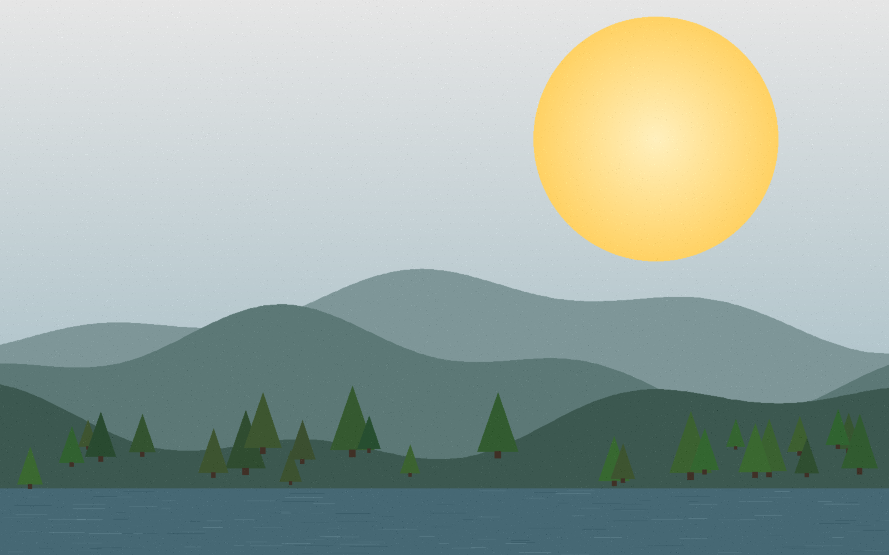

MODUL 01Barevná hloubka — kolik barev je ještě dost
Kolik bitů připadá na jeden pixel určuje, kolik různých barev může obrázek obsahovat.
16 777 216 barev · 290,2 kB
hloubka_24bit.png

Zapiš: U kolika bitů se poprvé objeví pásy v obloze? Který motiv by 4 bity ještě snesl a který ne?